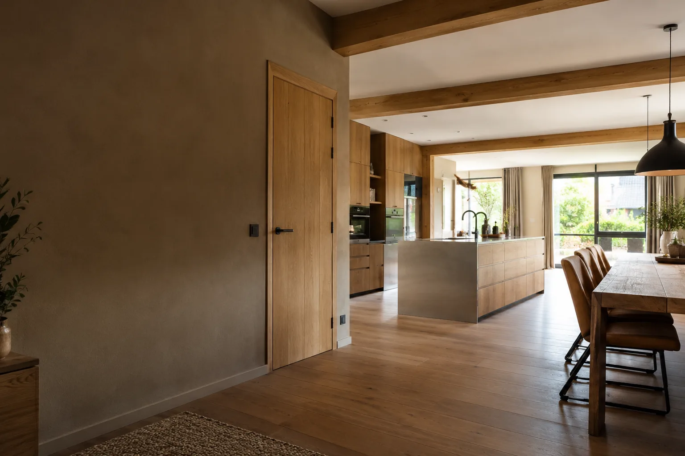
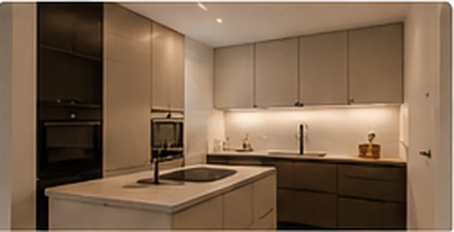
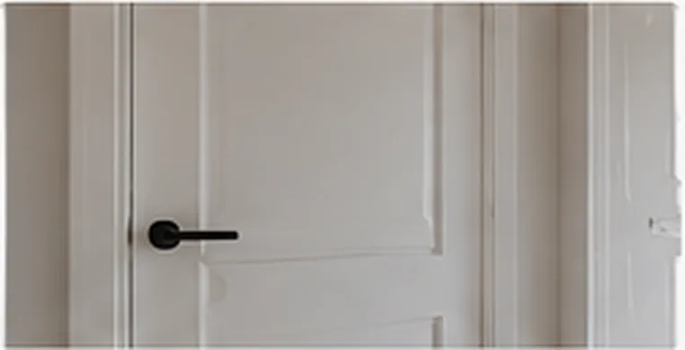
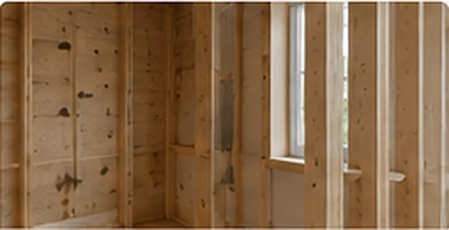
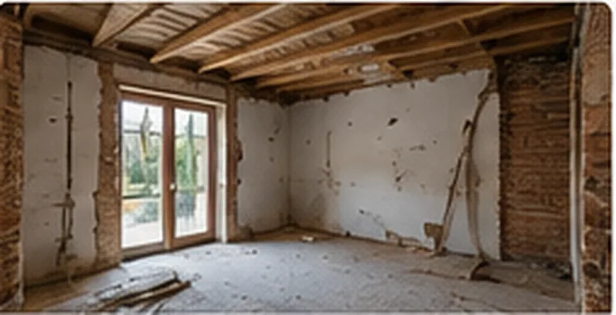
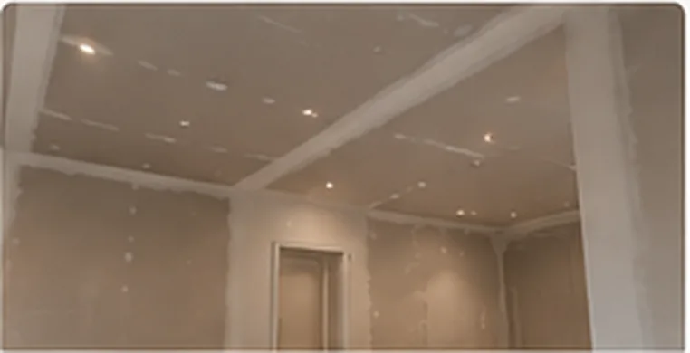

VAN RENOVATIE TOT DE KLEINSTE KLUS
Werkzaamheden voor binnen én buiten.
Ontdek het brede aanbod van De Jongh Allroundservice. Staat uw klus er niet tussen? Neem gerust contact op.
Bespreek uw klus ↗
Alle werkzaamheden
Gegroepeerd zodat u snel vindt wat u zoekt.

Keukens & montage
- Keuken (de)monteren en plaatsen
- Meubels (de)monteren
- Meubels maken
- Ombouw of koof plaatsen/vervangen
- Gordijnrails ophangen
- Kunst of voorwerpen aan de muur ophangen
- Lamp ophangen

Timmerwerk & binnenafwerking
- Binnendeur plaatsen of vervangen
- Deuren repareren
- Buitendeuren repareren
- Binnenwand plaatsen
- Plafond plaatsen of verlagen
- Vensterbanken plaatsen of vervangen
- Plinten plaatsen of vervangen
- Lijsten en ornamenten
- Trap repareren of onderhouden
- Vliering plaatsen of renoveren
- Raamkozijnen plaatsen of vervangen
- Raamkozijnen repareren
- Boeidelen, windveren of rabatdelen vervangen of repareren
Vloeren & afwerking
- Laminaat leggen
- Vloer egaliseren
- Vloer verwijderen
- Kitten
- Warmte-isolatie

Tuin & buitenwerk
- Vlonders plaatsen of vervangen
- Veranda aanleggen of vervangen
- Carport plaatsen
- Pergola of tuinhuis plaatsen
- Schutting of hek plaatsen
- Hek of schutting repareren of onderhouden
- Tuinaanleg
- Tuinonderhoud
- Bestrating aanleggen
- Bestrating verwijderen of afvoeren

Renovatie & verbouwing
- Renovatie huis
- Dakkapel of dakraam repareren
- Metaalbewerking

Onderhoud & kleine klussen
- Sloten plaatsen of repareren
- Rolluik plaatsen of vervangen
- Binnenzonwering plaatsen of vervangen
- Diverse kleine klussen
- Verhuizen binnen hetzelfde gebouw
Niet gevonden wat u zoekt?
Vertel Joshua over uw klus, ook als deze niet in het overzicht staat.